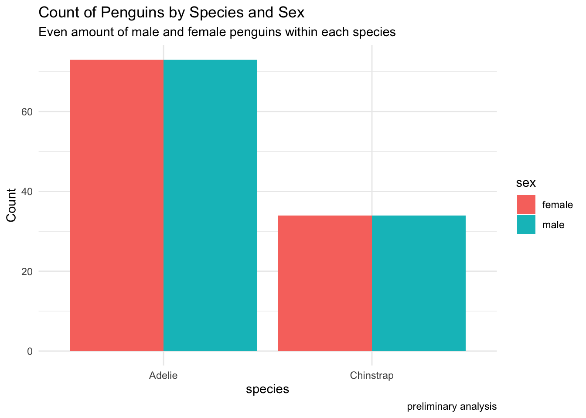
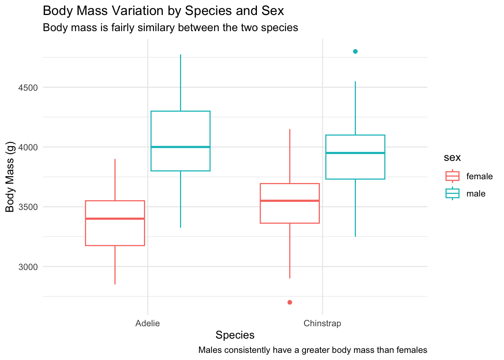
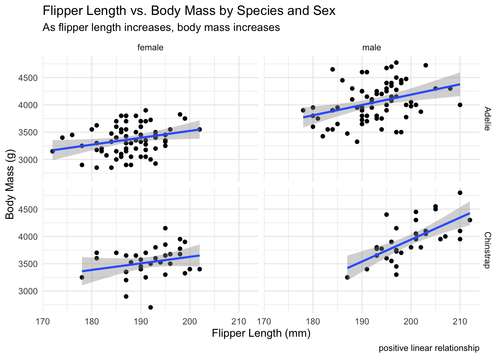
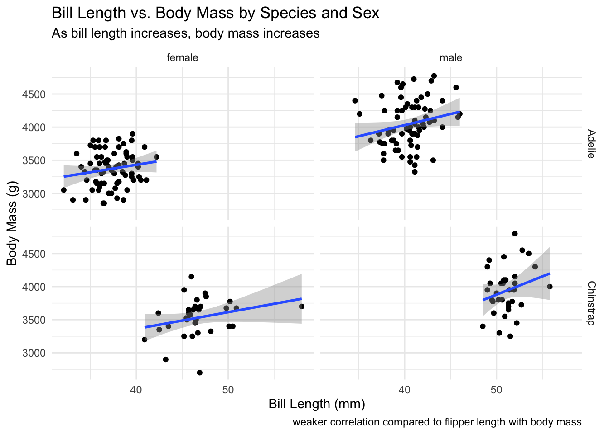

The peguins dataset I am using comes from the palmerpenguins package, installed from CRAN using install.packages(“palmerpenguins”). More specifically, Dr. Kirsten Morgan and the Palmer Station, Antarctica LTER, collected and released this data. The data collected is on three penguin species: Chinstrap, Gentoo, and Adelie. The dataset has information on the island the specific penguin is located on, specific body measurements, sex, and year (Horst, Hill, and Gorman 2020).
The intended audience is someone who is interested in penguins potentially with a focus on penguin body size measurements. Knowing this information could lead to a better understanding of how certain body measurements of animals may impact their physical health and life expectancy. With this limited data, this is the preliminary step to more impactful research as I am analyzing trends related to penguin species, sex, and body size measurements. More information on the importance of the topic is available here (Trivelpiece et al. 1987).
Questions
How does body mass vary between sex for the Chinstrap and Adelie species? For each of these two species and their sex, what is the relationship between bill length and body mass? What is the relationship between flipper length and body mass?
Count Analysis: The Data
Show the code
# Filter the data to remove the NA values, and only have the Chinstrap and Adelie species. Next, only select the columns needed for the analysispenguins_filtered<- penguins %>%filter(species %in%c("Chinstrap", "Adelie")) %>%na.omit() %>%select(species, sex, body_mass_g, bill_length_mm, flipper_length_mm)penguins_filtered
# A tibble: 214 × 5
species sex body_mass_g bill_length_mm flipper_length_mm
<fct> <fct> <int> <dbl> <int>
1 Adelie male 3750 39.1 181
2 Adelie female 3800 39.5 186
3 Adelie female 3250 40.3 195
4 Adelie female 3450 36.7 193
5 Adelie male 3650 39.3 190
6 Adelie female 3625 38.9 181
7 Adelie male 4675 39.2 195
8 Adelie female 3200 41.1 182
9 Adelie male 3800 38.6 191
10 Adelie male 4400 34.6 198
# ℹ 204 more rows
# First GGplot will show generale count between the species for eachs sexpenguins_filtered %>%group_by(species, sex) %>%summarise(count =n()) %>%ggplot(aes(x = species, y = count, fill = sex)) +geom_bar(stat ="identity", position ="dodge") +labs(title ="Count of Penguins by Species and Sex", y ="Count", subtitle ="Even amount of male and female penguins within each species",caption ="preliminary analysis",) +theme_minimal()

Figure 1: Count of species by sex
This graph shows that there is an even proportion of males and females within each species, this initial observation allows us to now compare the size measures for males and females for each species.
Show the code
penguins_filtered %>%ggplot(aes(x = species, y = body_mass_g, color = sex)) +geom_boxplot() +labs(title ="Body Mass Variation by Species and Sex",y ="Body Mass (g)",x ="Species",subtitle ="Body mass is fairly similary between the two species",caption ="Males consistently have a greater body mass than females", ) +theme_minimal()

Figure 2: Boxplot: Body Mass variation by species and sex
What is the relationship between flipper length and body mass?
Show the code
ggplot(penguins_filtered, aes(x = flipper_length_mm, y = body_mass_g)) +geom_point() +geom_smooth(method ="lm") +facet_grid(species ~ sex) +labs(title ="Flipper Length vs. Body Mass by Species and Sex",x ="Flipper Length (mm)",y ="Body Mass (g)",subtitle ="As flipper length increases, body mass increases",caption ="positive linear relationship" ) +theme_minimal()

Figure 3: Scatterplot: Flipper Length and Body Mass
What is the relationship between bill length and body mass?
Show the code
ggplot(penguins_filtered, aes(x = bill_length_mm, y = body_mass_g)) +geom_point() +geom_smooth(method ="lm") +facet_grid(species ~ sex) +labs(title ="Bill Length vs. Body Mass by Species and Sex",x ="Bill Length (mm)",y ="Body Mass (g)",subtitle ="As bill length increases, body mass increases",caption ="weaker correlation compared to flipper length with body mass" ) +theme_minimal()

Figure 4: Scatterplot: Bill Length and Body Mass
Bill length scatter plot is more clumped together than the flipper length scatterplot. Visually, flipper length seems to have more of a positive linear relationship with body mass. Correlation values split by sex and species are calculated below.
Calculating Correlation of Body Mass and Bill length, By Species, and By Sex
Show the code
# Calculate correlation for bill length and body mass by speciesbill_cor_by_species <-by(penguins_filtered, penguins_filtered$species, function(subset) {cor(subset$bill_length_mm, subset$body_mass_g)})print(bill_cor_by_species)
# Calculate correlation for bill length and body mass by sexbill_cor_by_sex <-by(penguins_filtered, penguins_filtered$sex, function(subset) {cor(subset$bill_length_mm, subset$body_mass_g)})print(bill_cor_by_sex)
penguins_filtered$sex: female
[1] 0.3278428
------------------------------------------------------------
penguins_filtered$sex: male
[1] -0.04416965
Calculate Correlation of Body Mass and Flipper length, By Species, and By Sex
Show the code
# Calculate correlation for flipper length and body mass by speciesflip_cor_by_species <-by(penguins_filtered, penguins_filtered$species, function(subset) {cor(subset$flipper_length_mm, subset$body_mass_g)})print(flip_cor_by_species)
# Calculate correlation for flipper length and body mass by sexflip_cor_by_sex <-by(penguins_filtered, penguins_filtered$sex, function(subset) {cor(subset$flipper_length_mm, subset$body_mass_g)})print(flip_cor_by_sex)
penguins_filtered$sex: female
[1] 0.3163406
------------------------------------------------------------
penguins_filtered$sex: male
[1] 0.3250839
Summary
Looking at the tables and figures provides a visual way of understanding and answering the questions. The first table summary and figure provide general information on the counts of each species and the averages, by species, for the body size measurements we are interested in. With this preliminary analysis, we are able to proceed to create graphs that show the general distribution of body mass for each species separated by sex. This box plot showed that Adelie and Chinstrap penguins tend to have similar body masses; however, Chinstrap females tend to have higher body mass then Adelie females. The last two figures are scatter plots that are split between gender and species to show relationships between flipper length and body mass, then bill length and body mass. These scatter plots both show that generally there is a positive correlation between flipper length and bill length with body mass. In addition to data visualizations, the correlation values were calculated. There is a positive and moderately strong positive correlation between bill length and body mass for the Adelie and chinstrap species. When separating by sex, females have a positive correlation between bill length and body mass, while males have a weak negative correlation. For flipper length and body mass, splitting by species shows a moderately strong positive correlation for both species, while splitting by species shows a positive correlation (although less strong) for both genders.
Functions Used
dplyr: group_by, filter, select, n()
ggplot
References
Grolemund, Garrett, and Hadley Wickham. 2017. R for Data Science. O’Reilly Media.
Trivelpiece, Wayne Z. et al. 1987. “Ecological Segregation of Adelie, Gentoo, and Chinstrap Penguins at King George Island, Antarctica.”Ecology 68 (2): 351–61. https://doi.org/10.2307/1939266.